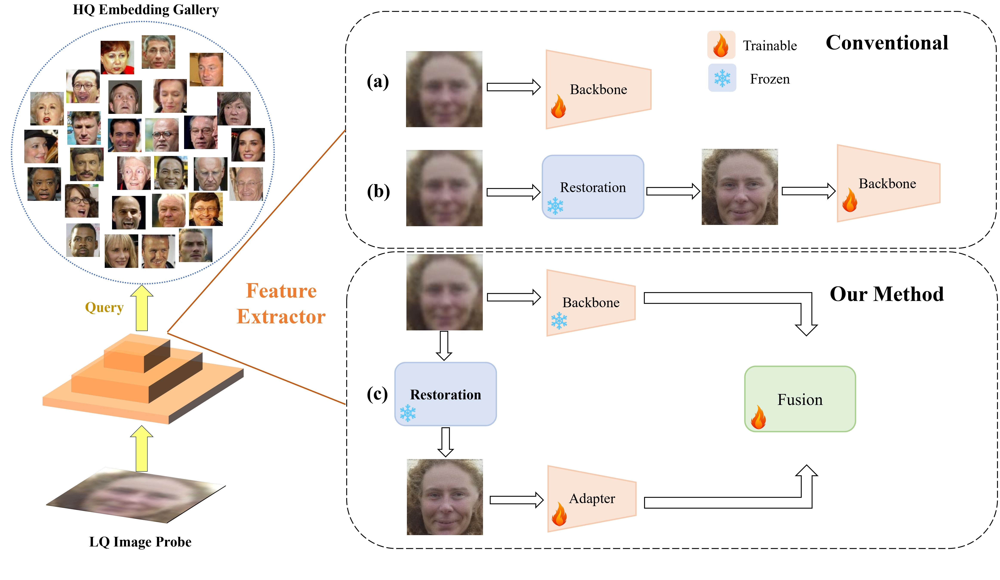

Yunhao Liu
Exchange Student @ Technical University of Munich
Senior CS Undergraduate @ Dalian University of Technology
Email1: yunhao dot liu at tum dot de
Email2: liuyunhaozz at gmail dot com


Yunhao LiuExchange Student @ Technical University of MunichSenior CS Undergraduate @ Dalian University of Technology
Email1: yunhao dot liu at tum dot de |
|
I am an exchange student in the Department of Informatics at Technical University of Munich (TUM), where I am doing guided research under the mentorship of Dr. Tobias Kirschstein and Dr. Simon Giebenhain. I'm also currently a research intern at Vision and Learning Lab working with Dr. Lu Qi and Prof. Ming-Hsuan Yang.
Before that, I spent three wonderful years during my undergraduate at Dalian University of Technology (DUT), studying Computer Science and Technology. I'm honored to be advised by Prof. Huchuan Lu and Prof. Xin Yang during my undergraduate research intern at DUT. I spent a wonderful summer in 2023 with Dr. Qinjin Jia and Prof. Edward F. Gehringer at NCSU CS. I'm interested in Computer Vision. My current research focuses include:
Technical University of Munich, Munich, Germany (Oct. 2023 - Present)
|
|
Dalian University of Technology, Dalian, China (Sep. 2020 - Jul. 2023)
|
|
|  | Effective Adapter for Face Recognition in the Wild Yunhao Liu, Lu Qi, Yu-Ju Tsai, Xiangtai Li, Kelvin C.K. Chan, and Ming-Hsuan Yang Arxiv Preprint. [project page] [paper] [pdf] [video] |
TU Munich, Munich, Bavaria, Germany (Oct. 2023 - Present)
|
|
UC Merced, Merced, CA, USA (May. 2023 - Present)
|
|
NC State University, Raleigh, NC, USA (Jul. 2023 - Sep. 2023)
|
|
Dalian University of Technology, Dalian, Liaoning, China (May. 2021 - Apr. 2023)
|
|
Dalian University of Technology, Dalian, Liaoning, China (Sep. 2021 - Nov. 2021)
|
|